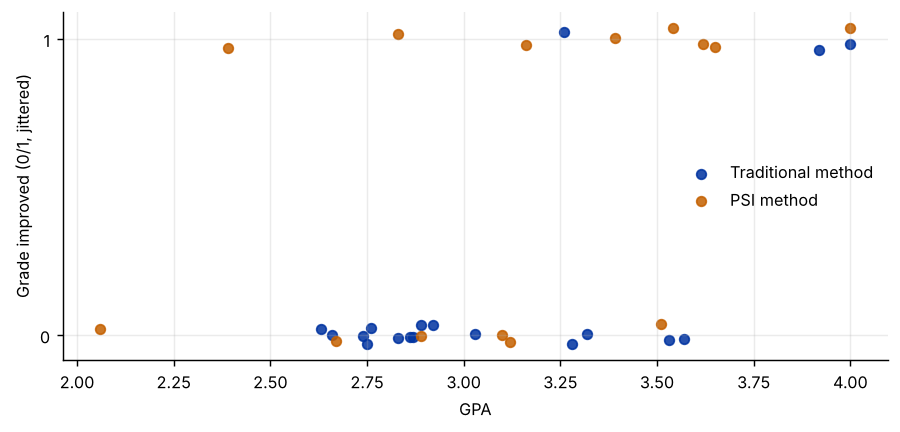
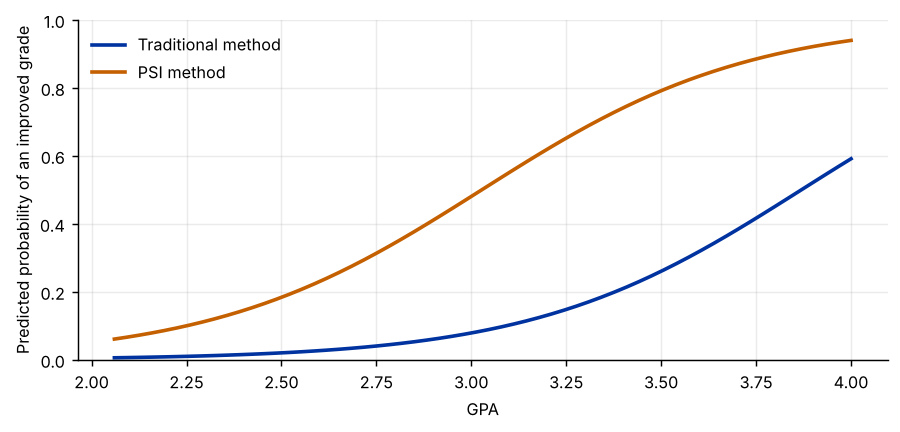
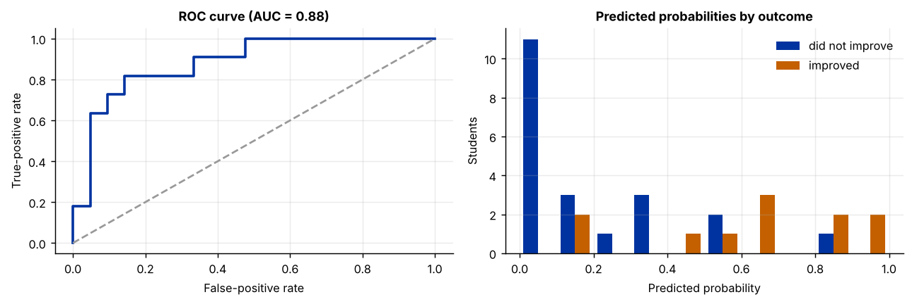

Run this model on your own data in Open Econometric Systems →
Step 1The question and the model
Does a new teaching method (PSI, the Personalized System of Instruction) raise the probability that an economics student earns an A in the next course, once we control for ability? Spector and Mazzeo (1980) observed 32 students and recorded whether the final grade improved over the grade in the previous course. In a binary-outcome model the probability of success depends on a linear index:
The coefficients \(\beta\) are estimated by maximum likelihood. The data have three explanatory variables.
| Symbol | Variable in the file | Definition |
|---|---|---|
| \(y\) | GRADE |
1 if the final grade was higher than in the previous course, 0 otherwise |
| \(x_1\) | GPA |
grade point average before the course (a measure of ability) |
| \(x_2\) | TUCE |
score on a pre-test of economics knowledge |
| \(x_3\) | PSI |
1 if the student was taught with the new method, 0 otherwise |
Before you estimate anything
- Is the outcome really binary and coded 0/1? A variable coded 1 and 2, or text such as "yes" and "no", must be recoded first.
- Are there enough observations in both classes? The rule of thumb is at least 10 observations of the rarer outcome for each parameter. Here 11 students improved and 21 did not, for four parameters: this is a small sample, and the guide shows what that means for inference.
- Does any regressor predict the outcome perfectly? Then the maximum-likelihood estimate does not exist (separation). The estimator will fail or return enormous coefficients.
How to write it: model section
We model the probability that a student's grade improves as a function of prior ability and the teaching method with a logit model estimated by maximum likelihood. The outcome equals one if the final grade is higher than the grade in the preceding course. The explanatory variables are the grade point average (GPA), a pre-test score (TUCE) and an indicator for the personalised system of instruction (PSI). Because logit coefficients are not changes in probabilities, we report average marginal effects and odds ratios, and we check the specification by a likelihood-ratio test, the Hosmer-Lemeshow test and a link test.
Step 2Load the data and look at it first
import warnings; warnings.filterwarnings("ignore")
import numpy as np, pandas as pd
import matplotlib.pyplot as plt
import statsmodels.api as sm
from scipy import stats
d = pd.read_csv("spector.csv")
print(f"{len(d)} students; share with an improved grade = {d.GRADE.mean():.3f}")
print(d[["GPA", "TUCE", "PSI", "GRADE"]].describe().round(3).loc[["mean", "std", "min", "max"]].T)
print("\nShare improving, by teaching method")
print(d.groupby("PSI").GRADE.agg(["count", "mean"]).rename(columns={"count": "students", "mean": "share improved"}).round(3))
print("\nMean GPA, by outcome")
print(d.groupby("GRADE").GPA.mean().round(3))
fig, ax = plt.subplots(figsize=(7, 3.4))
rng = np.random.default_rng(1)
for psi, c, lab in [(0, "#0033a0", "Traditional method"), (1, "#c46000", "PSI method")]:
s = d[d.PSI == psi]
ax.scatter(s.GPA, s.GRADE + rng.uniform(-.04, .04, len(s)), color=c, label=lab, s=28, alpha=.85)
ax.set_xlabel("GPA"); ax.set_ylabel("Grade improved (0/1, jittered)"); ax.set_yticks([0, 1]); ax.legend(frameon=False)
plt.tight_layout()32 students; share with an improved grade = 0.344
mean std min max
GPA 3.117 0.467 2.06 4.0
TUCE 21.938 3.902 12.00 29.0
PSI 0.438 0.504 0.00 1.0
GRADE 0.344 0.483 0.00 1.0
Share improving, by teaching method
students share improved
PSI
0 18 0.167
1 14 0.571
Mean GPA, by outcome
GRADE
0 2.952
1 3.433
Name: GPA, dtype: float64
How to read it
Of the 32 students, 34% improved their grade. Among students taught with the PSI method 57% improved, against 17% under the traditional method, a large raw gap. But the students who improved also had a higher GPA (3.43 against 2.95 on average), and ability may be unevenly spread across the two methods. A model that controls for GPA and TUCE separates the teaching effect from the ability effect. The figure shows the pattern: the students who improved are concentrated at high GPA, and the orange PSI students are on the right.
Step 3Why not a linear regression? The linear probability model
y = d.GRADE
X = sm.add_constant(d[["GPA", "TUCE", "PSI"]])
lpm = sm.OLS(y, X).fit(cov_type="HC1")
print(lpm.summary().tables[1])
fit = lpm.fittedvalues
print(f"\nLinear probability model: {int((fit < 0).sum())} fitted values below 0 and {int((fit > 1).sum())} above 1 "
f"(range {fit.min():.2f} to {fit.max():.2f})")
# the variance of the error of a binary outcome depends on the regressors: Var = p (1 - p)
resid2 = lpm.resid ** 2
print(f"Breusch-Pagan test for heteroskedasticity: p = {sm.stats.diagnostic.het_breuschpagan(lpm.resid, X)[1]:.3f}")==============================================================================
coef std err z P>|z| [0.025 0.975]
------------------------------------------------------------------------------
const -1.4980 0.498 -3.011 0.003 -2.473 -0.523
GPA 0.4639 0.151 3.070 0.002 0.168 0.760
TUCE 0.0105 0.017 0.603 0.547 -0.024 0.045
PSI 0.3786 0.150 2.518 0.012 0.084 0.673
==============================================================================
Linear probability model: 5 fitted values below 0 and 0 above 1 (range -0.07 to 0.98)
Breusch-Pagan test for heteroskedasticity: p = 0.163How to read it
The linear probability model (LPM) is easy to read, because each coefficient is directly a change in probability: here a student taught with PSI is about 0.38 more likely to improve. But the model has two known flaws. It can predict impossible probabilities (the output counts the fitted values outside the 0 to 1 range), and the variance of a binary outcome is \(p(1-p)\), which changes with the regressors, so the errors are heteroskedastic by construction and the standard errors must be robust (the Breusch-Pagan test does not reject here, p = 0.16, but with 32 observations it has little power). The LPM is still a useful benchmark: when the logit marginal effects are close to the LPM coefficients, the choice of model is not driving your conclusion.
Step 4The logit model
logit = sm.Logit(y, X).fit(disp=0)
print(logit.summary().tables[1])
print(f"\nLog-likelihood = {logit.llf:.4f}; constant-only log-likelihood = {logit.llnull:.4f}")
lr = 2 * (logit.llf - logit.llnull)
print(f"Likelihood-ratio test that all slopes are zero: chi2(3) = {lr:.2f}, p = {stats.chi2.sf(lr, 3):.4f}")
print(f"McFadden pseudo R-squared = {logit.prsquared:.3f}")
# odds ratios with delta-method standard errors and confidence intervals from the coefficients
b, se = logit.params, logit.bse
orr = pd.DataFrame({"odds ratio": np.exp(b), "std. err.": np.exp(b) * se,
"95% CI low": np.exp(b - 1.96 * se), "95% CI high": np.exp(b + 1.96 * se)}).drop("const")
print("\nOdds ratios"); print(orr.round(3).to_string())==============================================================================
coef std err z P>|z| [0.025 0.975]
------------------------------------------------------------------------------
const -13.0213 4.931 -2.641 0.008 -22.687 -3.356
GPA 2.8261 1.263 2.238 0.025 0.351 5.301
TUCE 0.0952 0.142 0.672 0.501 -0.182 0.373
PSI 2.3787 1.065 2.234 0.025 0.292 4.465
==============================================================================
Log-likelihood = -12.8896; constant-only log-likelihood = -20.5917
Likelihood-ratio test that all slopes are zero: chi2(3) = 15.40, p = 0.0015
McFadden pseudo R-squared = 0.374
Odds ratios
odds ratio std. err. 95% CI low 95% CI high
GPA 16.880 21.318 1.420 200.633
TUCE 1.100 0.156 0.833 1.452
PSI 10.791 11.487 1.339 86.941How to read it
The logit coefficients are the change in the log odds of improving. GPA has a coefficient of 2.83 (p = 0.025) and PSI 2.38 (p = 0.025); TUCE, 0.10, is not significant. The signs and significance are the first read, and the size is easier in odds: the odds ratio for PSI is 10.8, so the odds of improving are about ten times higher under the PSI method, holding GPA and TUCE fixed. The confidence interval (1.3 to 86.9) is very wide, a reminder that 32 students, 11 of whom improved, cannot pin the size down. The likelihood-ratio test rejects that all slopes are zero (chi-squared 15.4, p = 0.0015). Do not interpret a logit coefficient as a change in probability: that is the job of the next step.
Step 5Marginal effects: the change in probability
ame = logit.get_margeff(at="overall", method="dydx", dummy=True)
mem = logit.get_margeff(at="mean", method="dydx", dummy=True)
tab = pd.DataFrame({"AME": ame.margeff, "std. err.": ame.margeff_se, "p-value": ame.pvalues,
"MEM (at means)": mem.margeff, "LPM coefficient": lpm.params.drop("const").values}, index=["GPA", "TUCE", "PSI"])
print("Average marginal effects (AME) of the logit, compared with the marginal effects at the means and the linear probability model")
print(tab.round(3).to_string())
# the AME by hand: for a continuous regressor the mean of f(x'b) * b_k over the sample, with f the logistic density;
# for a 0/1 regressor the mean change in the predicted probability when it goes from 0 to 1
Xb = X.values @ logit.params.values
lam = np.exp(Xb) / (1 + np.exp(Xb)) ** 2
by_hand_gpa = (lam * logit.params["GPA"]).mean()
X1, X0 = X.copy(), X.copy(); X1["PSI"] = 1; X0["PSI"] = 0
by_hand_psi = (logit.predict(X1) - logit.predict(X0)).mean()
print(f"\nBy hand: AME of GPA = {by_hand_gpa:.4f}, AME of PSI (discrete change) = {by_hand_psi:.4f}")
# predicted probability of improving across GPA, by teaching method, with TUCE at its mean
g = np.linspace(d.GPA.min(), d.GPA.max(), 60)
fig, ax = plt.subplots(figsize=(7, 3.4))
for psi, c, lab in [(0, "#0033a0", "Traditional method"), (1, "#c46000", "PSI method")]:
grid = pd.DataFrame({"const": 1.0, "GPA": g, "TUCE": d.TUCE.mean(), "PSI": psi})
ax.plot(g, logit.predict(grid), color=c, lw=2, label=lab)
ax.set_xlabel("GPA"); ax.set_ylabel("Predicted probability of an improved grade"); ax.set_ylim(0, 1); ax.legend(frameon=False)
plt.tight_layout()Average marginal effects (AME) of the logit, compared with the marginal effects at the means and the linear probability model
AME std. err. p-value MEM (at means) LPM coefficient
GPA 0.363 0.109 0.001 0.534 0.464
TUCE 0.012 0.018 0.493 0.018 0.010
PSI 0.358 0.142 0.012 0.456 0.379
By hand: AME of GPA = 0.3626, AME of PSI (discrete change) = 0.3575
How to read it
The average marginal effects answer the question in probabilities. Averaged over the 32 students, one more grade point raises the probability of improving by 0.36, and switching a student from the traditional method to PSI raises it by 0.36 (a discrete change from 0 to 1, not a derivative). The effect of TUCE is 0.01 and not significant. The by-hand calculation reproduces the numbers, which shows that the marginal effect is the logistic density times the coefficient, averaged over the sample. The figure shows why the effect is not a single number: it is the vertical gap between the curves, which is small at low GPA, large in the middle and small again near the top, where almost everybody improves. The LPM coefficient for PSI (0.38) is close to the logit AME (0.36), but for GPA the linear model gives 0.46 against 0.36, because a straight line cannot bend where the probability flattens out. The marginal effects at the sample means (0.53 for GPA, 0.46 for PSI) are larger than the averages, because the student with mean characteristics sits on the steep middle of the curve, while many real students sit in the flat parts. Report the average marginal effect unless there is a reason to describe a typical case.
How to write it: main result
Holding GPA and the pre-test score constant, the PSI method raises the probability of an improved grade by 0.36 (average marginal effect, standard error 0.14, p = 0.012), and the odds of improving are 10.8 times those under the traditional method (95% confidence interval 1.3 to 86.9). An additional grade point raises the probability by 0.36 (standard error 0.11, p < 0.001). The pre-test score has no significant effect. The wide confidence interval for the odds ratio reflects the small sample of 32 students.
Step 6How well does the model fit? Classification and the ROC curve
p = logit.predict(X)
def classify(cut):
yhat = (p >= cut).astype(int)
tn, fp = ((yhat == 0) & (y == 0)).sum(), ((yhat == 1) & (y == 0)).sum()
fn, tp = ((yhat == 0) & (y == 1)).sum(), ((yhat == 1) & (y == 1)).sum()
return tn, fp, fn, tp
tn, fp, fn, tp = classify(0.5)
print("Classification at the cut-off 0.5")
print(pd.DataFrame([[tn, fp, tn + fp], [fn, tp, fn + tp]], index=["actual 0", "actual 1"], columns=["predicted 0", "predicted 1", "total"]))
print(f"Correctly classified = {(tn + tp) / len(d):.3f}; sensitivity = {tp / (tp + fn):.3f}; specificity = {tn / (tn + fp):.3f}")
print(f"Share correct from always predicting the more common outcome = {max(y.mean(), 1 - y.mean()):.3f}")
# area under the ROC curve = probability that a random improver gets a higher predicted probability than a random non-improver
r = stats.rankdata(p); n1 = int(y.sum()); n0 = len(y) - n1
auc = (r[y == 1].sum() - n1 * (n1 + 1) / 2) / (n1 * n0)
print(f"Area under the ROC curve (AUC) = {auc:.3f}")
order = np.argsort(-p.values)
tpr = np.r_[0, np.cumsum(y.values[order]) / n1]; fpr = np.r_[0, np.cumsum(1 - y.values[order]) / n0]
fig, ax = plt.subplots(1, 2, figsize=(10, 3.4))
ax[0].plot(fpr, tpr, color="#0033a0", lw=2); ax[0].plot([0, 1], [0, 1], color="#999", ls="--")
ax[0].set_xlabel("False-positive rate"); ax[0].set_ylabel("True-positive rate"); ax[0].set_title(f"ROC curve (AUC = {auc:.2f})")
ax[1].hist([p[y == 0], p[y == 1]], bins=np.linspace(0, 1, 11), label=["did not improve", "improved"], color=["#0033a0", "#c46000"])
ax[1].set_xlabel("Predicted probability"); ax[1].set_ylabel("Students"); ax[1].set_title("Predicted probabilities by outcome"); ax[1].legend(frameon=False)
plt.tight_layout()Classification at the cut-off 0.5
predicted 0 predicted 1 total
actual 0 18 3 21
actual 1 3 8 11
Correctly classified = 0.812; sensitivity = 0.727; specificity = 0.857
Share correct from always predicting the more common outcome = 0.656
Area under the ROC curve (AUC) = 0.883
How to read it
At the 0.5 cut-off the model classifies 26 of 32 students correctly (81%), with a sensitivity of 73% (8 of 11 improvers) and a specificity of 86% (18 of 21). That should be compared with the benchmark of always predicting "no improvement", which is right 66% of the time: the model beats it, but not by a wide margin. The AUC of 0.88 is better than the classification rate as a summary, because it does not depend on a cut-off. It says that a randomly chosen improver has a higher predicted probability than a randomly chosen non-improver 88% of the time (0.5 is chance, 1 is perfect). McFadden's pseudo R-squared (0.37) is not comparable to an OLS R-squared: values of 0.2 to 0.4 are already considered a good fit.
Step 7Specification tests
# Hosmer-Lemeshow test: compare observed and predicted frequencies in groups of the predicted probability
G = 6
grp = pd.qcut(p.rank(method="first"), G, labels=False)
chi = 0.0
for k in range(G):
m = grp == k; n_k, o_k, pbar = m.sum(), y[m].sum(), p[m].mean()
chi += (o_k - n_k * pbar) ** 2 / (n_k * pbar * (1 - pbar))
print(f"Hosmer-Lemeshow ({G} groups): chi2({G - 2}) = {chi:.3f}, p = {stats.chi2.sf(chi, G - 2):.4f}")
# Pregibon link test: add the square of the linear index; it should not be significant
xb = pd.Series(X.values @ logit.params.values, index=d.index)
lt = sm.Logit(y, sm.add_constant(pd.DataFrame({"xb": xb, "xb2": xb ** 2}))).fit(disp=0)
print(f"Link test: z on the squared index = {lt.tvalues['xb2']:.3f}, p = {lt.pvalues['xb2']:.4f}")
# Omitted-variable check: add a squared GPA term
X2 = X.assign(GPA2=d.GPA ** 2)
lg2 = sm.Logit(y, X2).fit(disp=0)
lrt = 2 * (lg2.llf - logit.llf)
print(f"Likelihood-ratio test of a squared GPA term: chi2(1) = {lrt:.3f}, p = {stats.chi2.sf(lrt, 1):.4f}")
# Robust standard errors: with a correctly specified logit they should be close to the conventional ones
rob = sm.Logit(y, X).fit(disp=0, cov_type="HC1")
print("\nStandard errors: conventional and heteroskedasticity-robust")
print(pd.DataFrame({"conventional": logit.bse, "robust (HC1)": rob.bse}).round(3).to_string())Hosmer-Lemeshow (6 groups): chi2(4) = 3.098, p = 0.5416
Link test: z on the squared index = -0.241, p = 0.8094
Likelihood-ratio test of a squared GPA term: chi2(1) = 2.112, p = 0.1461
Standard errors: conventional and heteroskedasticity-robust
conventional robust (HC1)
const 4.931 5.198
GPA 1.263 1.268
TUCE 0.142 0.118
PSI 1.065 0.964How to read it
The Hosmer-Lemeshow test does not reject (p = 0.54): the predicted and observed frequencies agree across groups. With 32 observations the test has very little power, so a non-rejection is weak evidence. The Pregibon link test (p = 0.81) and the likelihood-ratio test of a squared GPA term (p = 0.15) find no sign that the index is misspecified. Robust and conventional standard errors are similar, within about 20%. In the logit, unlike in OLS, heteroskedasticity is not a nuisance but a misspecification: if the variance of the latent error depends on the regressors, the coefficients themselves are inconsistent, and robust standard errors do not repair that. Treat the robust errors as a diagnostic.
Step 8Logit or probit? A robustness check
probit = sm.Probit(y, X).fit(disp=0)
mep = probit.get_margeff(at="overall", method="dydx", dummy=True)
cmp_ = pd.DataFrame({"logit coef": logit.params, "probit coef": probit.params, "ratio": logit.params / probit.params})
print(cmp_.round(3).to_string())
print()
amet = pd.DataFrame({"logit AME": ame.margeff, "probit AME": mep.margeff, "LPM": lpm.params.drop("const").values}, index=["GPA", "TUCE", "PSI"])
print(amet.round(3).to_string())
print(f"\nLog-likelihood: logit = {logit.llf:.3f}, probit = {probit.llf:.3f}")
print(f"Correlation of the fitted probabilities = {np.corrcoef(logit.predict(X), probit.predict(X))[0, 1]:.4f}") logit coef probit coef ratio
const -13.021 -7.452 1.747
GPA 2.826 1.626 1.738
TUCE 0.095 0.052 1.840
PSI 2.379 1.426 1.668
logit AME probit AME LPM
GPA 0.363 0.361 0.464
TUCE 0.012 0.011 0.010
PSI 0.358 0.374 0.379
Log-likelihood: logit = -12.890, probit = -12.819
Correlation of the fitted probabilities = 0.9994How to read it
The probit coefficients are about 0.57 times the logit coefficients (the ratio is close to 1.7), because the two latent errors have different scales, the logistic having a standard deviation of 1.81 and the normal of 1. That is why coefficients cannot be compared across the two models. The marginal effects are what to compare, and they are almost the same: the probit and logit AMEs for GPA and TUCE agree to the third decimal, and for PSI they differ by 0.016 (0.374 against 0.358), far less than the standard error of 0.14. The linear probability model agrees for TUCE and PSI but not for GPA (0.46). The log-likelihoods differ by less than 0.1 and the fitted probabilities have a correlation above 0.99. In practice the choice between logit and probit almost never changes a conclusion; logit has the advantage of odds ratios, probit of a link to a normal latent variable and to the extensions with correlated errors (bivariate and ordered probit).
Step 9What to report in the paper
Report, in this order: the number of observations and the share of ones; the coefficient table with standard errors; the average marginal effects (and the odds ratios if your field reads them); the likelihood-ratio test and the pseudo R-squared; a measure of fit that does not depend on a cut-off (the AUC) with the classification table at a stated cut-off; and the specification checks. Say whether the standard errors are conventional, robust or clustered, and why.
How to write it: results and robustness
Table 1 reports the logit estimates. The model is jointly significant (likelihood-ratio chi-squared of 15.4 with 3 degrees of freedom, p = 0.002) and has a McFadden pseudo R-squared of 0.37. The model classifies 81% of the students correctly at a cut-off of 0.5, against 66% for always predicting no improvement, and the area under the ROC curve is 0.88. The Hosmer-Lemeshow test (p = 0.54) and the Pregibon link test (p = 0.81) do not indicate misspecification, although with 32 observations they have little power. A probit model gives average marginal effects that agree with the logit to within 0.02, and a linear probability model gives a similar effect for the teaching method, so the conclusion about the teaching method does not depend on the functional form.
Step 10Common mistakes
Mistakes to avoid
- Reading a logit coefficient as a change in probability. The coefficient is a change in the log odds. The change in probability depends on where you are on the curve; report marginal effects.
- Comparing logit and probit coefficients. They differ by a scale factor of about 1.6 to 1.8. Compare marginal effects.
- Treating a dummy variable's effect as a derivative. For a 0/1 regressor report the discrete change from 0 to 1, not the slope of the curve at a point (
dummy=Truein statsmodels). - Judging fit by the share correctly classified alone. With a rare outcome, predicting "no" for everybody scores very high. Compare with the benchmark and report the AUC.
- Ignoring separation and small samples. With few observations in the rarer class, the maximum-likelihood standard errors are unreliable. Consider a penalised (Firth) estimator or exact methods.
- Using robust standard errors to repair heteroskedasticity. In a nonlinear model heteroskedasticity makes the coefficients inconsistent. Robust errors only protect against other misspecification of the variance.
- Forgetting to cluster. If observations are grouped (students in classes, firms in industries), cluster the standard errors at the group level.